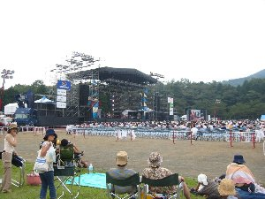
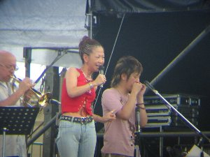
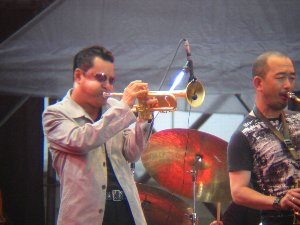
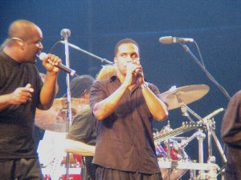

Mt.FUJI JAZZ FESTIVAL | 2003.08.23 |
|---|---|
| 夏のJAZZフェス！ このフレーズを聴いただけで行きたいって気になりますよね。 Mt.Fuji Jazz Festivalにいずみ姉さん、シュガーと私（べっしー）の三人で行ってきました。 現場に着くと曇り空。場所は富士スピードウェイの第五駐車場。思ったほど広くは無いです。 昼食をまったり食べていたら少し遅くなって１時過ぎに到着。駐車場は他県ナンバーの車で一杯です。子供連れから、哀愁漂う中年まで。（中年でもＴシャツ姿だっりするが） 野外なのでステージ前のパイプ椅子に座るも良し、私達みたく少し離れたところに（と言ってもステージは見える）椅子とテーブルを並べて聴くも良し、です。 綾戸智絵が出てきた頃から、ビールを飲み始めます。本日は黒エビスも有り！綾戸智絵は有名なので知っている人も多いでしょうが、（私は誰か知らずにJazzとか聴いている人なので知りませんでした）一言で言えば関西のおばちゃんJazzボーカリストってとこ？ そんなこと言ったら失礼だよね〜。でも、そーなんです。『まいど〜』って言いながら出てくるし、話も面白い！ でも歌い出すとすごいんです。バンッバンッ、って来る感じ？う〜ん、そー言う知識に詳しくないんで、これがこうだとか、アレが何が良いとかって言葉が出てこないんだけど盛り上がります！ テンポが良いって言うのかな〜？巧いんですよね。なんか、引き寄せられます。 途中で綾戸智絵の親戚衆というフレーズで５０人くらいがステージに。みんなで体を左右に揺らしながら声高らかにコーラスが入ります。ホントに素人か？？ | |
|  ここが第五駐車場。いわゆる会場！ |  まったりとビール漬け！ |
| しかし、昼間から椅子にふんぞり返り、ビール片手に（当然コップに移して飲む。泡を作らなきゃ）Jazzを聴く。ぜーたくだなと思いますよ。これ。 次は日野皓正。この人も有名らしい。（知らなくてスンマセン。） この人はトランペッターで、肺の空気全部出してます！ってな感じで賢明に吹いているんですが、お話は一切ナシ！肉声を聴くことは無かった。もしかして機嫌悪いんじゃ無いだろうか？って気になりましたよ。 夕闇迫る頃、と書きたいのですが雲は低く立ちこめ、時間的には夕刻なのですが周りは真っ白！雲が低くなりすぎて、と言うよりも雲の中にいるような状態になって来ました。 ただ、それがステージではスモークを炊いたようないい感じになって場を盛り上げます。 少し休憩を挟み、後半の部スタート。Take６です。 Take６はいずみ姉さんのお気に入りらしいのですが、これ又知りません。（ホーント、スンマセン！勉強します） しかし、さすがいずみ姉さんが気に入るだけの事は有り、って事です。ステージにどんどん引き寄せられます。体が勝手にリズムを刻み始めるのです！ 実際、それまで空いていたステージ前のパイプ椅子も大混雑。しかも総立ち！（実際は立ってないで座ってみている人もいるんだけど、それじゃー前が見えないと思うんだよね。なぜ座ったままでいられるのか？） シュガーもいずみ姉さんも踊りながらステージの方に引き寄せられて行きました。まるでハーメルンのバイオリンだな。 そんなこんなで無事Jazzフェス終了。終了と共に花火打ち上がり、低い雲の中で咲いていましたがよく見えませんでした。 | |
|  綾戸智絵さんですね♪ 面白いおばちゃんです |  日野皓正さんです♪ ホントほっぺふくらんでますよ |
| 霧雨みたくはなったけど、本格的な雨にはならず良かったです。実に有意義な一日でした。 今回の写真は、特に人物のＵＰなどは、フィールドスコープ（野鳥見たりする地上望遠鏡みたいの）に、取り付けリング無いので手持ちで何とか合わせ、液晶を見ながら無理矢理ピントらしいものを選んで撮ったモノなので、画像はもとより全て悪いです。 っーか、良く写ったなレベルでした。（手で中心軸合わせるのは至難の業。でもこのデジカメでは取り付けリング出てないし） 気分だけでも味わって頂けたでしょうか？！ いずみ感想 芝生にテーブルとイスをセットして、デイキャンプの風情の三人組は、 生のジャズを聴きながらマッタリするという贅沢を味わってまいりました。 でも・・・大好きなTake6だけはマッタリなんかしてられない！ 前の方にズズズイ〜と進むと、もう自然に体が動いてる。 その素晴らしいハーモニーに何度鳥肌が立ったことか！ ステージと観客との一体感。 室内のコンサートと違う、野外のノリ。 イチャイチャするカップルが、どれだけ視界に入ったとしても・・・ やっぱり野外ライブはイイね〜！！ | |
|  Take６メンバーです♪ 引き寄せられます |  夜の会場 未知との遭遇か！ |